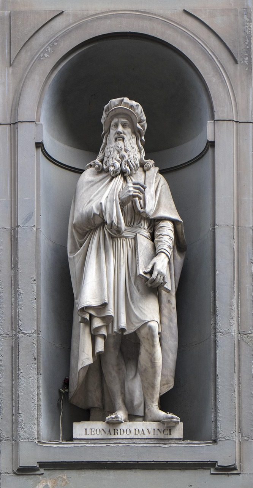
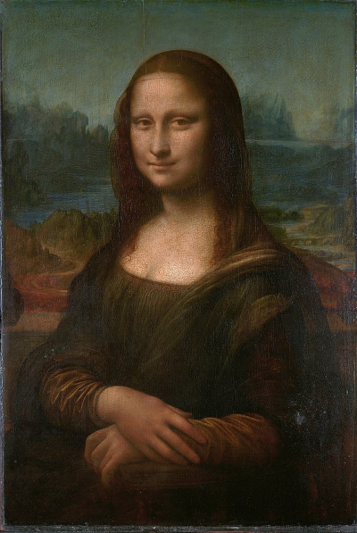
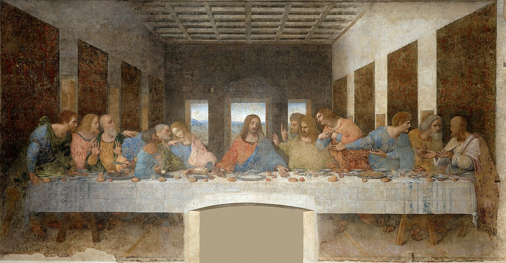
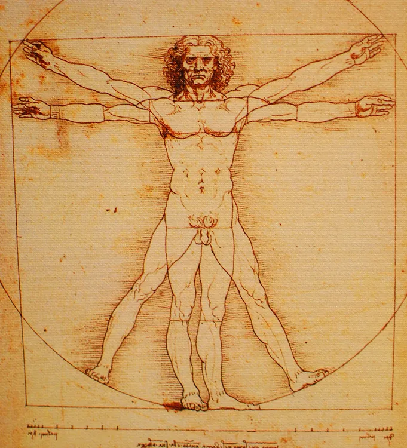

Biographie
Léonard de Vinci est né le 15 avril 1452 à Vinci, en Italie. Il est l'un des plus grands génies de l'histoire, un véritable polymathe dont les talents s'étendaient de l'art à la science, en passant par l'ingénierie et l'architecture.
De Vinci a appris la peinture à Florence et a travaillé sous l'égide de grands mécènes comme Lorenzo de Médicis. Ses œuvres les plus célèbres incluent "La Joconde" et "La Cène". Il a aussi exploré des domaines tels que l'anatomie humaine, l'ingénierie et la mécanique, laissant un héritage riche et diversifié.
Œuvres Célèbres
La Joconde
Peinte entre 1503 et 1506, "La Joconde" est l'une des œuvres les plus célèbres et emblématiques de l'histoire de l'art. Sa mystérieuse expression et son regard fascinant continuent d'attirer des millions de visiteurs au musée du Louvre.
La Cène
Peinte entre 1495 et 1498, "La Cène" représente le dernier repas de Jésus-Christ avec ses apôtres. Cette œuvre monumentalement influente a été réalisée pour le réfectoire du monastère de Santa Maria delle Grazie à Milan.
L'Homme de Vitruve
"L'Homme de Vitruve", réalisé en 1490, est un célèbre dessin qui explore les proportions du corps humain et est considéré comme une illustration de l'harmonie entre l'homme et l'architecture.
Influence et Héritage
Léonard de Vinci a influencé non seulement le domaine de l'art, mais aussi les sciences et l'ingénierie. Ses carnets de croquis regorgent de croquis et d'idées pour des inventions comme des machines volantes et des ponts mobiles, bien avant que la technologie ne les rende possibles. Son esprit novateur a laissé une empreinte durable sur la Renaissance et a inspiré des générations d'artistes et de scientifiques.
Il est considéré comme l'archétype du génie universel, alliant l'art et la science de manière que peu d'autres ont pu égaler.